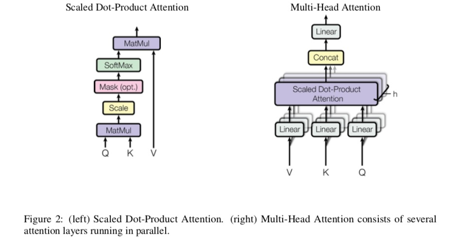

本文其实写的有些迟到，毕竟这是谷歌17年6月的工作，不过好戏不怕晚，这项工作亮点在于不用CNN,RNN也能得到STOA的效果, 而理论上的指导意义在于
- Self-Attention思想
- Transformer 结构
模型结构
这里模型结构强推另一个博客，讲的十分清楚，按照数据的处理流程来讲，十分清楚。
Transformer
其实Transformer 还是一个Seq2Seq 的结构，但是Transformer 却打破了一种观点，Seq2Seq 一定是基于RNN，LSTM 来进行的。
Encoder 部分
Encoder的组件
- Multi-Head Attention 组件
- Feed-Forward 组件
我这里用组件，是因为每一个Multi-Head Attention & Feed-Forward 操作之后都会紧跟
- residual connection
- layer normalization
这里对这些操作不详述
Multi-Head Attention

反映到公式上
$$\text{MultiHead}(Q, K, V) = \text{Concat}(head_1, \dots, head_h)W^{O}$$
where
$$\text{head}_i = \text{Attention}(QW_i^Q, KW_i^K, VW_i^V)$$
$$\text{Attention}(Q, K, V) = \text{softmax}(\frac{QK^T}{\sqrt{d_v}})V$$
其中 对于Self-Attention来讲$K = Q = K \in R^{d_{model}}$ ,$W_i^Q \in R^{d_{model} \times d_k}$, $W_i^K \in R^{d_{model} \times d_k}$, $W_i^V \in R^{d_{model} \times d_V}$
对现有工作的启发
现在Transformer 已经作为Tensorflow的一个模块上线了 Tensor2Tensor